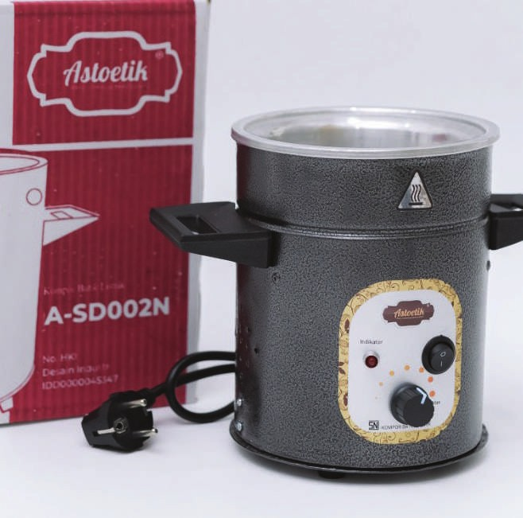
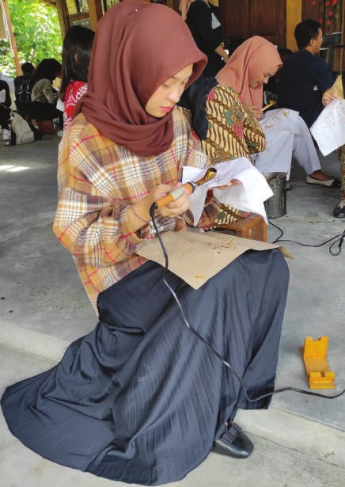
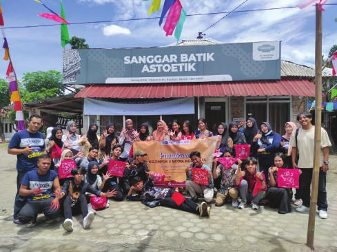
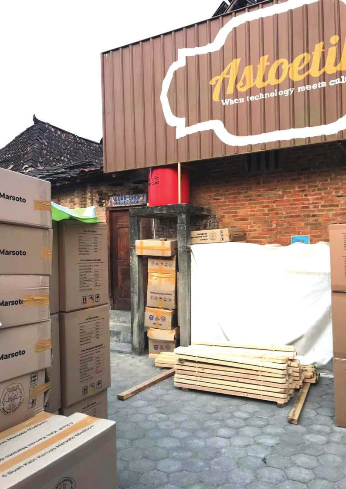
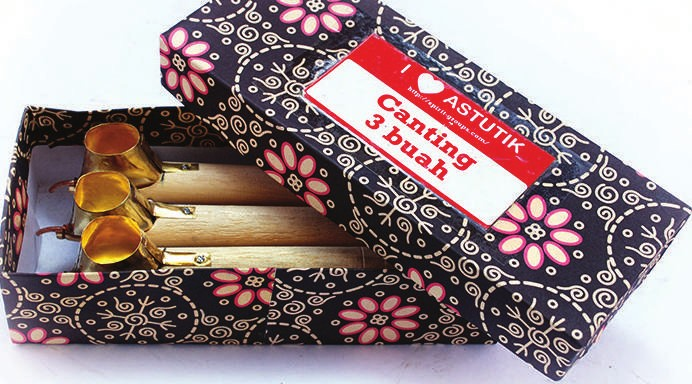

Membatik Lebih Hemat dengan Teknologi Listrik
CV. Astoetik Indonesia memproduksi kompor batik listrik dan canting listrik bersertifikat SNI dan TKDN, langsung dari Kasihan, Bantul, Yogyakarta.
- Bersertifikat SNI, TKDN, dan ISO 9001:2015
- Garansi 1 tahun untuk kompor batik listrik
- Dilengkapi sanggar pelatihan dan sertifikasi batik

Tentang Astoetik
Sanggar dan Toko Batik "Astoetik" bergerak di bidang industri, perdagangan peralatan dan bahan membatik, serta jasa pelatihan batik, didukung oleh CV. Astoetik Indonesia.
Inovasi
Astoetik adalah akronim dari Auto-Electric Stove for Batik, kompor batik listrik hemat energi karya anak bangsa.
Bersertifikat
Produk telah memiliki SNI, TKDN, dan ISO 9001:2015, serta terdaftar HKI sebagai desain industri dan merek dagang.
Pelatihan Batik
Sanggar Batik menyelenggarakan pelatihan dan sertifikasi BNSP berbasis kompetensi, dengan sentuhan teknologi.
Pelestarian Budaya
Berharap ikut melestarikan budaya Indonesia dan meningkatkan perekonomian masyarakat Kasihan, Bantul.



Sejarah Astoetik: dari PMCT hingga CV Mandiri
Astoetik mulai dikomersialkan sejak 2012 dan menjadi badan usaha resmi pada Januari 2014 dengan nama PT Putra Multi Cipta Teknikindo (PMCT) yang dipimpin Nova Suparmanto. Sejak 2017, PMCT mengembangkan alat lukis, sablon, gergaji triplek, serta ukir/pahat.
Pada 2019, Astoetik berdiri sendiri sebagai CV. Astoetik Indonesia di bawah Direktur Aris Stiyawan, dan meraih sertifikat ISO 9001:2015 pada Oktober tahun yang sama. Sanggar dan toko batiknya sendiri telah dimulai sejak 2013, menjual produk Astoetik sekaligus mengadakan pelatihan batik di berbagai daerah.
Jejak Kinerja Astoetik
Ringkasan skala produk, standar sertifikasi, dan kekuatan tim CV. Astoetik Indonesia.
Varian Produk
Kategori Produk
Sertifikasi: SNI, TKDN, ISO 9001, HKI
Anggota Tim Inti (2024)
Produk Kami
Enam kategori produk dalam katalog Astoetik
Katalog Produk
Alat & Mesin Batik Buatan Bantul
Dari kompor dan canting listrik hingga mesin batik dan pengolahan limbah, semuanya dibuat di Bantul, Yogyakarta. Kompor batik listrik Astoetik telah bersertifikat SNI.

Kompor Batik Listrik
Pilihan bodi aluminium, besi, atau tanah liat dengan daya 170–270 watt. Bergaransi 1 tahun dan telah bersertifikat SNI.
Kompor Batik Kayu & Cap
Kompor bodi kayu 170 watt dan kompor cap 700 watt berbodi besi atau stainless untuk produksi batik cap.
Canting Listrik & Gawangan
Canting nyamplung kuningan 40 watt, serta versi portabel 8 watt bertenaga baterai untuk membatik di mana saja.
Peralatan Produksi Membatik
Loyang tembaga dan aluminium, bak celup, meja cap dan pola, dudukan kompor, pembidang, hingga panci pelorodan.
Mesin Produksi Membatik
Mesin batik berpengendali PC dalam empat tipe (SGL-4332, FTS-3421, FTD-3820, SGD-4133) dengan daya sekitar 450–550 watt.
Mesin Pengolahan Limbah
Alat pengolah limbah cair batik kapasitas 40 liter (V.1) dan 80 liter (V.2), dilengkapi filter dan berdaya sekitar 450 watt.
Tersedia di & Mitra Kami
Produk Astoetik dapat dibeli lewat marketplace dan katalog pengadaan, serta didukung kerja sama dan sertifikasi lembaga terkait
Penghargaan & Sertifikasi
Bukti kualitas dan legalitas CV. Astoetik Indonesia
Apresiasi dari Pemerintah Republik Indonesia kepada pelaku usaha yang konsisten menerapkan Standar Nasional Indonesia (SNI).
Sertifikat penggunaan tanda SNI untuk kompor batik listrik (SNI IEC 60335.2.9:2010), berlaku 6 Januari 2023 sampai 5 Januari 2027.
Sistem manajemen mutu SNI ISO 9001:2015 dengan ruang lingkup kompor batik listrik. Astoetik pertama meraih ISO 9001:2015 pada Oktober 2019.
Tanda sah capaian tingkat komponen dalam negeri 2022 untuk kompor batik listrik, canting listrik, easel, dan gawangan batik.
Desain industri kompor batik listrik (2015) serta merek dagang Astutik (2014) dan Astoetik (2019) yang telah terdaftar.
Akta pendirian CV. Astoetik Indonesia tertanggal 31 Agustus 2019 dan izin usaha perdagangan (SIUP) melalui sistem OSS.
Proses Produksi dan Layanan Astoetik
Menghadirkan Inovasi melalui Proses yang Berkualitas
CV. Astoetik Indonesia berkomitmen menghadirkan peralatan membatik yang inovatif, berkualitas, dan sesuai dengan kebutuhan para pengrajin batik. Melalui pengembangan teknologi, proses produksi, serta pengujian produk, Astoetik berupaya menghasilkan peralatan membatik yang dapat mendukung kegiatan produksi batik secara lebih efektif dan efisien.
Perencanaan dan Pengembangan Produk
Proses diawali dengan mengidentifikasi kebutuhan para pengrajin batik serta mengembangkan inovasi teknologi yang sesuai dengan kebutuhan tersebut. Pengembangan produk dilakukan untuk menghasilkan peralatan membatik yang praktis, efisien, dan mudah digunakan.
Persiapan Bahan dan Komponen
Bahan dan komponen disiapkan berdasarkan spesifikasi produk yang akan dibuat. Pemilihan material disesuaikan dengan kebutuhan fungsi, ketahanan, dan karakteristik masing-masing peralatan membatik.
Proses Produksi dan Pengujian
Proses produksi dilakukan melalui tahapan perakitan dan penyelesaian produk sesuai dengan spesifikasi yang telah ditentukan. Pengujian dilakukan untuk memastikan produk dapat berfungsi dengan baik dan memenuhi persyaratan kualitas yang berlaku.
Distribusi dan Layanan Pelanggan
Produk yang telah selesai diproduksi dipasarkan melalui berbagai saluran penjualan, termasuk marketplace dan katalog pengadaan. Astoetik juga menyediakan garansi satu tahun untuk produk kompor batik listrik serta layanan pelatihan membatik melalui Sanggar Batik Astoetik.
Pertanyaan yang Sering Diajukan
Temukan informasi mengenai CV. Astoetik Indonesia, produk peralatan membatik, pemesanan, serta layanan yang tersedia.
1 Apa itu CV. Astoetik Indonesia?
CV. Astoetik Indonesia merupakan perusahaan yang bergerak di bidang produksi dan distribusi peralatan serta bahan membatik. Astoetik merupakan singkatan dari Auto-Electric Stove for Batik yang mencerminkan fokus perusahaan dalam mengembangkan teknologi kompor listrik untuk kegiatan membatik.
2 Apa saja produk yang ditawarkan Astoetik?
Astoetik menyediakan enam kategori produk, yaitu kompor batik listrik, kompor batik kayu dan cap, canting listrik dan gawangan, peralatan produksi membatik, mesin produksi membatik, serta mesin pengolahan limbah.
3 Sejak kapan CV. Astoetik Indonesia berdiri?
Produk Astoetik mulai dipasarkan pada tahun 2012. Kegiatan sanggar dan toko batik dimulai pada tahun 2013. Usaha ini kemudian berdiri secara resmi pada Januari 2014 dengan nama PT Putra Multi Cipta Teknikindo. Pada tahun 2019, usaha tersebut menjadi CV. Astoetik Indonesia yang dipimpin oleh Aris Stiyawan.
1 Bagaimana cara mengetahui harga produk Astoetik?
Harga produk disesuaikan dengan jenis dan spesifikasi yang dipilih. Pelanggan dapat menghubungi Astoetik melalui WhatsApp di nomor 0813-2513-1111 untuk memperoleh informasi harga produk.
2 Apa saja spesifikasi kompor batik listrik Astoetik?
Kompor batik listrik Astoetik tersedia dengan pilihan bahan bodi aluminium, besi, dan tanah liat. Daya listrik yang digunakan berkisar antara 170 hingga 270 watt, bergantung pada jenis dan spesifikasi produk.
3 Di mana pelanggan dapat membeli produk Astoetik?
Produk Astoetik dapat diperoleh melalui saluran penjualan perusahaan, termasuk marketplace dan katalog produk. Pelanggan juga dapat menghubungi perusahaan secara langsung melalui WhatsApp di nomor 0813-2513-1111 untuk mendapatkan informasi pemesanan.
1 Apakah kompor batik listrik Astoetik memiliki garansi?
Ya. Kompor batik listrik Astoetik dilengkapi dengan garansi selama satu tahun sebagai bentuk layanan purna jual kepada pelanggan.
2 Apakah Astoetik menyediakan pelatihan membatik?
Ya. Melalui Sanggar Batik Astoetik, perusahaan menyediakan pelatihan membatik serta sertifikasi kompetensi melalui BNSP. Kegiatan ini bertujuan mendukung pengembangan keterampilan dan pengetahuan dalam proses produksi batik.
3 Bagaimana cara menghubungi CV. Astoetik Indonesia?
Pelanggan dapat menghubungi CV. Astoetik Indonesia melalui WhatsApp di nomor 0813-2513-1111 untuk memperoleh informasi mengenai produk, spesifikasi, pemesanan, dan layanan yang tersedia.
Masih memiliki pertanyaan? Hubungi CV. Astoetik Indonesia untuk mendapatkan informasi lebih lanjut mengenai produk dan layanan kami.
Hubungi KamiStruktur Perusahaan
Tim Astoetik
Perusahaan dipimpin seorang Direktur dengan Komisaris. Manajer Operasional mengoordinasikan divisi Sales & Marketing, Produksi & Stok, dan IT-R&D, sedangkan divisi Admin & Finance menangani administrasi dan keuangan.
Kontak Kami
Informasi Produk dan Layanan CV. Astoetik Indonesia.
Alamat Kantor & Workshop
CV. Astoetik IndonesiaJl. Lestari RT 02, Jeblog, Tirtonirmolo,
Kecamatan Kasihan, Kabupaten Bantul,
Daerah Istimewa Yogyakarta 55181
Senin - Sabtu, 08.00 - 16.00 WIB
Buka di Google MapsLokasi
Jl. Lestari RT 02, Jeblog, Tirtonirmolo, Kasihan, Bantul, DIY 55181
Informasi Produk
Kompor batik listrik, canting, peralatan, dan mesin produksi batik.
Layanan Pelatihan
Pelatihan membatik melalui Sanggar Batik Astoetik.
Sosial Media
Instagram:
@cv.astoetik
Facebook:
Astoetik Batik
YouTube:
@batik.astoetik
TikTok: @astoetik.indonesia
WhatsApp:
0813-2513-1111
Hubungi CV. Astoetik Indonesia
Ingin mengetahui informasi mengenai produk, spesifikasi, harga, atau layanan pelatihan membatik? Hubungi kami melalui WhatsApp untuk mendapatkan informasi lebih lanjut.
Hubungi melalui WhatsApp